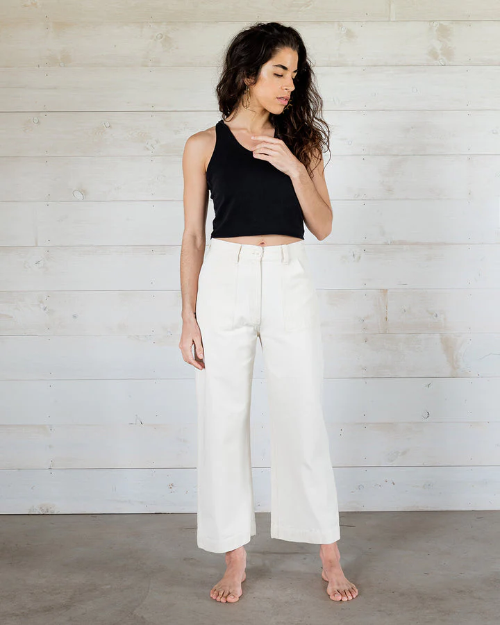
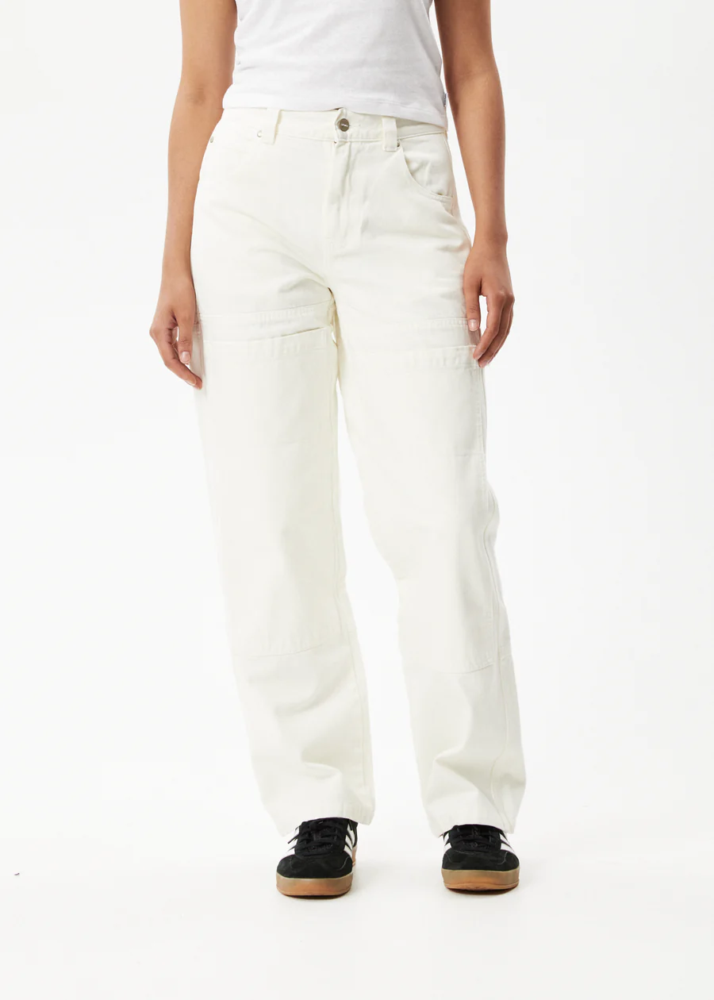

Urban Outfitters
BDG Y2K Low-Rise Cargo Pant
Y2K-inspired low-rise cargo pants from BDG. Featuring a relaxed fit perfect for all activities.
Sustainability Facts
Materials:
100% Cotton
Cotton Sustainability Facts:
According to WWF, it takes more than 20,000 liters (5,283 gallons) of water to produce just
one kilogram (2.2 pounds) of cotton, which roughly equals one T-shirt and a pair of jeans.

Soluna Collective
Wide Leg Cargo Pants

Afends
Organic Denim Carpenter Jeans